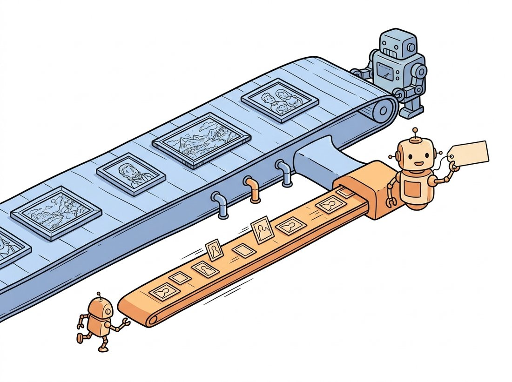

"You taught me to slide a little window over an image and call what I found an edge. So I slid a little box over a stack of images, and what I found was a wave goodbye. Same trick, one more dimension, infinitely more drama."
A 3D Convolution Kernel With a Flair for the Theatrical
There are exactly two ways to teach a convolutional network to see motion: make the convolution itself span time, or compute the motion separately and feed it in as a second input. The first idea is the 3D convolution, a direct generalization of the learnable 2D kernel of Chapter 19 to a spatiotemporal cube that learns motion patterns the way a 2D kernel learns edges. The second is the two-stream network, which runs one pathway on raw frames for appearance and another on precomputed optical flow for motion, then fuses their verdicts. This section builds both from scratch, explains why the naive 3D convolution is so expensive, and walks through the factorized and multi-rate designs (R(2+1)D, I3D, SlowFast) that made spatiotemporal convolution the workhorse of action recognition for half a decade.
In Section 26.1 we turned a video into a clip tensor of shape $(C, T, H, W)$. Now we feed that tensor to a network that must output an action label. The chapter's central question, where to spend compute between the spatial and temporal axes, gets its first two concrete answers here. We start with the 3D convolution, see why it works and why it is costly, then study the orthogonal two-stream design that splits the problem in half. Both predate the video transformers of Section 26.3, but neither is obsolete; the factorized 3D blocks and the SlowFast multi-rate idea remain in production systems and inform transformer design.
1. The 3D Convolution Beginner
Recall the 2D convolution: a kernel of shape $(C_{in}, k_h, k_w)$ slides over the height and width of an image, and at each position it computes a dot product, producing one output value per spatial location per output channel. A 3D convolution does the identical thing with one more axis. Its kernel has shape $(C_{in}, k_t, k_h, k_w)$, and it slides over time as well as height and width. Where a 2D kernel sees a small spatial patch, a 3D kernel sees a small spatiotemporal cube: a patch of the image across several consecutive frames. A kernel that responds to a bright region moving rightward across three frames is detecting rightward motion, exactly as a Sobel kernel from Chapter 3 detects a vertical edge, and just as in the 2D case those kernels are learned, not designed. The illustration below shows how spanning several frames at once turns a spatial edge into motion.
The output of a 3D convolution is itself a 4D feature map $(C_{out}, T', H', W')$, so 3D convolutions stack exactly like 2D ones, building a hierarchy of increasingly abstract spatiotemporal features. The cost of the generalization is multiplicative. A 2D kernel has $C_{in} \cdot k_h \cdot k_w$ weights per output channel; the 3D version multiplies that by $k_t$, and the number of output positions is also multiplied by the temporal extent. For a typical $3 \times 3 \times 3$ kernel this is a $3\times$ increase in parameters and a substantial increase in compute and activation memory over the 2D equivalent. Figure 26.2.1 contrasts the two operations.
The PyTorch implementation needs only the 3D versions of the layers you already know. nn.Conv3d, nn.BatchNorm3d, and nn.MaxPool3d are drop-in temporal generalizations of their 2D counterparts. The minimal C3D-style block below takes a clip and produces a class logit, and the printed shape shows time being pooled away as the network deepens, exactly as height and width are pooled in a 2D CNN.
import torch
import torch.nn as nn
class Small3DCNN(nn.Module):
"""A compact C3D-style action classifier over a (N, C, T, H, W) clip."""
def __init__(self, num_classes=400):
super().__init__()
self.features = nn.Sequential(
nn.Conv3d(3, 32, kernel_size=3, padding=1), nn.BatchNorm3d(32), nn.ReLU(),
nn.MaxPool3d(kernel_size=(1, 2, 2)), # pool space, keep time early
nn.Conv3d(32, 64, kernel_size=3, padding=1), nn.BatchNorm3d(64), nn.ReLU(),
nn.MaxPool3d(kernel_size=2), # now pool time and space
nn.Conv3d(64, 128, kernel_size=3, padding=1), nn.BatchNorm3d(128), nn.ReLU(),
nn.AdaptiveAvgPool3d(1), # global spatiotemporal pool
)
self.head = nn.Linear(128, num_classes)
def forward(self, x): # x: (N, 3, T, H, W)
z = self.features(x).flatten(1) # (N, 128)
return self.head(z)
clip = torch.randn(2, 3, 16, 112, 112) # 2 clips, 16 frames
print("logits:", Small3DCNN(num_classes=10)(clip).shape) # logits: torch.Size([2, 10])Small3DCNN. The only change from a 2D CNN is that every layer is the Conv3d / BatchNorm3d / MaxPool3d family and the input carries a time axis; the first MaxPool3d(kernel_size=(1, 2, 2)) deliberately preserves time while reducing space, a common pattern that delays temporal collapse.The conceptual payoff of the 3D convolution is that motion stops being a special quantity you must compute and becomes an ordinary feature the network learns. A 2D kernel that fires on a light-to-dark transition is an edge detector; a 3D kernel that fires on a bright blob shifting position from frame to frame is a motion detector, and the network discovers both by the same gradient descent. This is the same lesson as Chapter 19, where learned first-layer filters came to resemble the hand-designed Sobel and Gabor kernels of classical vision, now extended one dimension: the first-layer 3D filters of a trained C3D network resemble oriented spatiotemporal energy filters, the learned cousins of the classical motion-energy models.
A learner who just met optical flow elsewhere often assumes a 3D convolution must estimate a displacement field internally, the way the two-stream temporal stream is handed explicit flow. It does not. A 3D kernel never outputs a $(u, v)$ vector; it computes a dot product over a small spatiotemporal cube and fires when the cube matches its learned weight pattern, the same mechanism as the 2D convolution of Chapter 19 applied to one more axis. In fact the network has no explicit notion of "this pixel moved here"; it only has scalar activations that happen to be high for certain motion patterns, exactly as a 2D edge filter's activation is high at an edge without ever representing "edge" as an object. This is precisely why the two-stream design of subsection 3 still bothers to feed in precomputed flow: the explicit motion field is information a 3D convolution does not produce on its own and may struggle to learn from limited data. A diagnostic check: if you believe a 3D conv computes flow, ask what its output shape is. It is a feature map $(C_{out}, T', H', W')$, not a two-channel displacement field.
2. Why Naive 3D Is Expensive, and How to Factorize It Intermediate
The $3\times$ parameter blow-up of full 3D convolution is real, and early 3D networks were both heavy and hard to train from scratch because video datasets were small relative to ImageNet. Two ideas solved this. The first, R(2+1)D, factorizes each 3D convolution into a 2D spatial convolution followed by a 1D temporal convolution. A full $k_t \times k_h \times k_w$ kernel is replaced by a $1 \times k_h \times k_w$ spatial kernel and a $k_t \times 1 \times 1$ temporal kernel applied in sequence. This has fewer parameters, and crucially it inserts a non-linearity between the spatial and temporal steps, giving the block more representational power than a single 3D convolution with the same receptive field. The math of the parameter saving is direct: a full kernel on $C$ channels uses $k_t k_h k_w C^2$ weights, while the factorized pair uses $k_h k_w C M + k_t M C$ weights, where the intermediate width $M$ is chosen to roughly match the original budget.
The second idea, I3D (Inflated 3D), addresses the data problem rather than the parameter count. Instead of training a 3D network from scratch, it takes a 2D network already pretrained on ImageNet and inflates every 2D kernel into 3D by replicating it $k_t$ times along the new temporal axis and dividing by $k_t$ so the response to a static clip matches the 2D network's response to a single frame. The division is just an average: on a frozen clip all $k_t$ copies see the identical frame, so summing $k_t$ identical responses and dividing by $k_t$ returns exactly the original 2D activation, which is what makes the inflated network start out behaving like its pretrained parent. The 3D network thus starts with strong spatial features and only needs to learn the temporal refinements, which is why I3D trained on the Kinetics dataset set the standard for years. The R(2+1)D factorization is shown below.
import torch
import torch.nn as nn
class R2Plus1DBlock(nn.Module):
"""Factorize a 3D conv into spatial (2D) then temporal (1D) convolutions."""
def __init__(self, in_ch, out_ch, t_kernel=3, s_kernel=3):
super().__init__()
# choose the intermediate width M so total params ~ a full 3D conv
mid = (t_kernel * s_kernel * s_kernel * in_ch * out_ch) // \
(s_kernel * s_kernel * in_ch + t_kernel * out_ch)
self.spatial = nn.Conv3d(in_ch, mid, kernel_size=(1, s_kernel, s_kernel),
padding=(0, s_kernel // 2, s_kernel // 2))
self.bn1 = nn.BatchNorm3d(mid)
self.temporal = nn.Conv3d(mid, out_ch, kernel_size=(t_kernel, 1, 1),
padding=(t_kernel // 2, 0, 0))
self.bn2 = nn.BatchNorm3d(out_ch)
self.relu = nn.ReLU(inplace=True)
def forward(self, x):
x = self.relu(self.bn1(self.spatial(x))) # spatial mixing, then non-linearity
x = self.relu(self.bn2(self.temporal(x))) # temporal mixing
return x
block = R2Plus1DBlock(32, 64)
print("out:", block(torch.randn(1, 32, 16, 28, 28)).shape) # out: torch.Size([1, 64, 16, 28, 28])R2Plus1DBlock: one 3D convolution becomes a spatial-only convolution (kernel $1 \times 3 \times 3$) then a temporal-only convolution (kernel $3 \times 1 \times 1$), with a ReLU between them. The intermediate width mid is sized so the factorized pair roughly matches a full 3D conv's budget; the extra non-linearity is what makes the block more expressive than the full kernel it replaces, not merely cheaper.Building and training a video backbone from scratch needs a Kinetics-scale dataset and days of GPU time. TorchVision ships R(2+1)D, S3D, and MViT pretrained on Kinetics, so transfer learning to your own action labels (the video analogue of the ImageNet transfer of Chapter 21) is three lines plus a new head:
# Load a Kinetics-pretrained R(2+1)D-18 and retarget it to your own action labels.
# Reusing the weights and their bundled transforms avoids train-test mismatch bugs.
import torch
from torchvision.models.video import r2plus1d_18, R2Plus1D_18_Weights
weights = R2Plus1D_18_Weights.KINETICS400_V1
model = r2plus1d_18(weights=weights) # pretrained on Kinetics-400
model.fc = torch.nn.Linear(model.fc.in_features, 10) # swap in your 10-class head
preprocess = weights.transforms() # the exact clip transforms used in trainingr2plus1d_18 and R2Plus1D_18_Weights. The library handles the full R(2+1)D stack and the Kinetics-400 training internally, letting you swap in a new fc head and reuse weights.transforms() rather than building and training the backbone yourself.The weights carry features learned from hundreds of thousands of clips, and weights.transforms() hands you the precise normalization, resize, and frame count the model expects, removing an entire class of silent train-test mismatch bugs. This replaces the roughly two hundred lines of a from-scratch backbone plus the dataset you do not have.
I3D's inflation trick is delightfully literal: it takes a flat 2D kernel and copies it $k_t$ times along the new time axis, then divides by $k_t$ so a frozen, perfectly still clip gives exactly the same answer the 2D network gave a single photo. In other words, a freshly inflated I3D thinks every video is a slideshow of one repeated image until training teaches it that things actually move. It is the rare case where a network's first instinct about the world is "nothing ever changes", and we have to gently disabuse it.
3. The Two-Stream Network Intermediate
The two-stream network takes the opposite bet from the 3D convolution. Rather than asking one network to learn appearance and motion jointly, it splits them into two independent pathways. The spatial stream is an ordinary 2D CNN that sees a single RGB frame and recognizes objects and scenes, the appearance cues. The temporal stream is a 2D CNN that sees a stack of optical flow fields, the dense pixel-motion vectors you first met classically in Chapter 15 and will rebuild with RAFT in Section 26.4. Because optical flow encodes motion explicitly, the temporal stream does not have to discover motion from raw pixels; it is handed the motion field and only has to recognize the pattern. The two streams' class scores are then fused, typically by averaging the softmax outputs. Figure 26.2.2 shows the architecture.
The implementation below wraps two image backbones and averages their logits. In practice the optical flow is precomputed offline and stored, because computing it per training step would dominate the cost; the flow stack is encoded as extra input channels (one pair of $x$ and $y$ displacement maps per frame interval). Note that the temporal stream's first convolution accepts $2L$ input channels for $L$ stacked flow frames, not 3, the one architectural difference from a standard image CNN. The asymmetry in how many frames each stream sees is deliberate and worth pausing on: a single RGB frame already settles appearance, since what objects are present rarely changes within a fraction of a second, but a single flow field captures only the instantaneous velocity at one instant. Stacking $L$ consecutive flow fields hands the temporal stream a short trajectory rather than a snapshot, so it can read the acceleration and the shape of a movement (a hand rising then falling, a foot planting then pushing off) that no single displacement map reveals.
import torch
import torch.nn as nn
import torchvision.models as tvm
class TwoStream(nn.Module):
def __init__(self, num_classes=400, flow_stack=10):
super().__init__()
# Spatial stream: a standard RGB ResNet.
self.spatial = tvm.resnet18(num_classes=num_classes)
# Temporal stream: same backbone, but first conv takes 2*flow_stack channels
# (x and y displacement for each of flow_stack frame intervals).
self.temporal = tvm.resnet18(num_classes=num_classes)
self.temporal.conv1 = nn.Conv2d(2 * flow_stack, 64, kernel_size=7,
stride=2, padding=3, bias=False)
def forward(self, rgb, flow): # rgb: (N,3,H,W), flow: (N,2L,H,W)
s = self.spatial(rgb).softmax(dim=1) # appearance probabilities
t = self.temporal(flow).softmax(dim=1) # motion probabilities
return 0.5 * (s + t) # late fusion by averaging
model = TwoStream(num_classes=10, flow_stack=10)
rgb = torch.randn(2, 3, 224, 224)
flow = torch.randn(2, 20, 224, 224) # 10 flow frames x (dx, dy)
print("fused probs:", model(rgb, flow).shape) # fused probs: torch.Size([2, 10])TwoStream network from two ResNet-18 backbones. The only structural change is the temporal stream's conv1, widened to accept $2L$ optical-flow channels (here 20, for 10 flow frames). Late fusion averages the two softmax outputs; the streams never share weights and can be trained separately.Who: a small applied-vision team building a workout-coaching app that counts repetitions and names exercises from a phone camera, 2023. Situation: their single-frame classifier confused exercises that look identical in a still image, like the bottom of a squat versus the bottom of a deadlift, because the distinguishing information is the direction of movement. Problem: a full 3D network was too heavy for on-device inference and too data-hungry for their few thousand labeled clips. Decision: they built a lightweight two-stream model, using the phone's built-in hardware optical-flow estimate as the temporal input so no extra flow computation was needed, and a small MobileNet for each stream. Result: the motion stream resolved the squat-versus-deadlift confusion almost entirely, the model ran in real time on the phone, and the separately-trained streams let them debug each pathway in isolation. Lesson: when the ambiguity in your task is fundamentally about motion direction, an explicit motion input can be both cheaper and more sample-efficient than asking one large network to rediscover motion from pixels. The two-stream design is old, but the principle of handing a network the right precomputed signal is timeless.
4. SlowFast: Spending the Budget Deliberately Advanced
SlowFast is the cleanest answer to the chapter's framing question. It observes that the two axes of video have different statistics: spatial appearance (what objects are present) changes slowly, while motion (how they move) changes quickly. So it uses two pathways at different frame rates. The Slow pathway processes few frames but with many channels, capturing rich spatial semantics; the Fast pathway processes many frames with few channels, capturing fine temporal detail cheaply. Lateral connections feed the Fast pathway's temporal information into the Slow pathway as the network deepens. The Fast pathway is deliberately lightweight (often about one-eighth the channels), so it adds fine motion sensitivity at a small fraction of the Slow pathway's cost. This is the explicit budget split the whole chapter circles around, and it consistently beat single-pathway 3D networks on Kinetics. The illustration below contrasts the wide, slow appearance pathway with the thin, fast motion one.

import torch
def sample_pathways(clip, slow_stride=8, fast_stride=2):
"""From a (N,C,T,H,W) clip, build the Slow and Fast pathway inputs.
Slow: few frames, high spatial detail. Fast: many frames, low channels.
"""
slow = clip[:, :, ::slow_stride] # e.g. T=64 -> 8 frames
fast = clip[:, :, ::fast_stride] # e.g. T=64 -> 32 frames
return slow, fast
clip = torch.randn(2, 3, 64, 224, 224) # 64-frame clip
slow, fast = sample_pathways(clip)
print("slow pathway:", slow.shape) # slow pathway: torch.Size([2, 3, 8, 224, 224])
print("fast pathway:", fast.shape) # fast pathway: torch.Size([2, 3, 32, 224, 224])
print("fast/slow frame ratio:", fast.shape[2] // slow.shape[2]) # fast/slow frame ratio: 4sample_pathways. The Slow pathway strides the 64-frame clip hard (here to 8 frames) and would carry many channels; the Fast pathway keeps four times as many frames (32) but is built with few channels. The dual sampling is the whole idea, and a full SlowFast model adds lateral fusion between the two pathways.Sweep the two stride arguments of sample_pathways and watch the frame ratio move. Hold slow_stride=8 and try fast_stride in (1, 2, 4, 8): the printed fast/slow frame ratio goes from 8 down to 1, and at fast_stride=8 the two pathways become identical, so the Fast pathway stops adding any temporal detail. Now add one line that estimates relative cost under the one-eighth-channel rule from the key insight below, cost = frame_count * channels with channels=1 for Fast and 8 for Slow, and print the Fast pathway's share of the total. Observe that even at ratio 8 the thin Fast pathway stays a small fraction of the compute: that is the SlowFast bargain made visible, and it is exactly the trade you will quantify in Exercise 26.2.3.
The number that makes SlowFast click is what the Fast pathway costs. It processes four to eight times as many frames as the Slow pathway, which sounds like it should dominate the compute, and yet in the original design it accounts for only about 20 percent of the network's total floating-point operations. The trick is the one-eighth channel width: compute in a convolutional layer scales with the product of frame count and channel count, so cutting channels to an eighth while raising the frame rate eightfold roughly cancels out. You are buying dense temporal sampling, the very thing that separates "opening a door" from "closing a door" back in Section 26.1, for almost nothing, by spending it on a pathway too thin to be expensive. This is the chapter's budget question answered with arithmetic: motion needs many frames but few channels, appearance needs few frames but many channels, and SlowFast simply refuses to pay the full price for either.
SlowFast, R(2+1)D, and I3D together define the convolutional era of action recognition. They share a thesis: motion is a learnable spatiotemporal pattern, and the engineering is about extracting it efficiently. The video transformers of Section 26.3 keep the thesis but replace the convolution's hard-wired locality with learned attention over space and time, just as the Vision Transformer of Chapter 22 replaced the 2D convolution. The multi-rate insight of SlowFast does not disappear, though; it reappears as multi-scale temporal tokenization in modern video transformers.
Although transformers dominate the leaderboards, efficient convolutional video networks remain competitive where compute is tight. X3D (Feichtenhofer, CVPR 2020) progressively expands a tiny 2D network along multiple axes (frames, resolution, width, depth) to find a Pareto-optimal video model, reaching strong Kinetics accuracy at a fraction of the floating-point operations (FLOPs) of I3D. The 2022 to 2024 wave of work, including UniFormer and the convolution-attention hybrids, deliberately reintroduces convolutional inductive bias into video transformers to recover data efficiency, echoing the CNN-versus-ViT hybrid story of Chapter 22. And SlowFast's pathway idea lives on in the multi-rate token designs of recent video foundation models. The lesson of the last few years is that the spatial-versus-temporal budget question of this section is architecture-independent; transformers answer it differently than 3D convolutions, but they must still answer it.
A full 3D convolution layer maps $C$ input channels to $C$ output channels with a $3 \times 3 \times 3$ kernel. Write the parameter count. Now compute the parameter count of the R(2+1)D factorization (a $1 \times 3 \times 3$ spatial convolution to an intermediate width $M$, then a $3 \times 1 \times 1$ temporal convolution back to $C$), for $C = 64$ and the $M$ that the code in subsection 2 computes. State the ratio and explain in two sentences why R(2+1)D can be both cheaper and more expressive than the full 3D convolution it replaces.
Using the TwoStream class from subsection 3, run the model on a clip three ways: spatial stream only, temporal stream only, and fused. Construct a tiny synthetic dataset of two "actions" that are identical in appearance but opposite in motion direction (for example, a bright bar sliding left versus right, with the optical flow computed as the per-pixel displacement). Train each configuration briefly and report accuracy. Confirm that the spatial-only stream is at chance while the temporal stream succeeds, demonstrating empirically why the motion pathway exists.
Using sample_pathways from subsection 4, vary the Slow and Fast strides and, for each setting, estimate the relative FLOPs of the two pathways assuming the Fast pathway uses one-eighth the channels of the Slow pathway and FLOPs scale linearly with frame count and channel count. Tabulate frame counts and estimated FLOPs for three stride pairs. Then argue, from your numbers, why the standard configuration keeps the Fast pathway cheap despite it processing four to eight times as many frames, and relate this back to the temporal-redundancy measurement of Section 26.1.